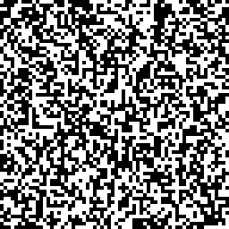
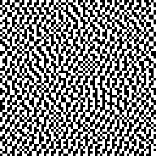

Patterns
These two patterns are the components of the bipartite textures. Once you are familar with these two patterns, click 'Start Pretest' to start.


Test Metamers 0/10
Use ArrowDown to show the next image.
Use ArrowLeft/ArrowRight to select vertical/horizontal split.
Green indicates correct answer, red indicates wrong answer. The viewing distance should be 5.8 times the image size (initially indicated as an empty square frame).